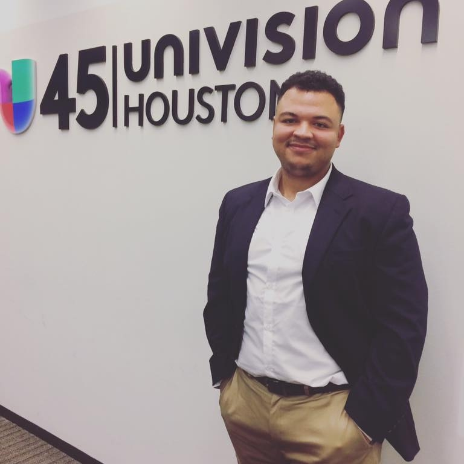

About Me
Hi, I'm
Bishop and welcome to my first homework assignment. I have my B.A. in Mass Communication from
Stephen F. Austin State University
with an emphasis in advertising and digital marketing. After highschool, I joined the Marines to
serve my country and now I am using the G.I. Bill to complete my certification. Check out my
Portfolio tab to see my latest works and progress!
Outside of work, I enjoy working out and
attending as many concerts as possible. I hope this class teaches me how to become a full stack
developer in the near future. That is why I decided that I would give the following program a
try! I am currently enrolled in Southern
Methodist University's Full Stack Flex Coding Bootcamp.